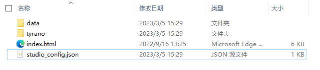
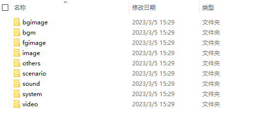
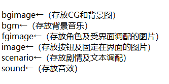
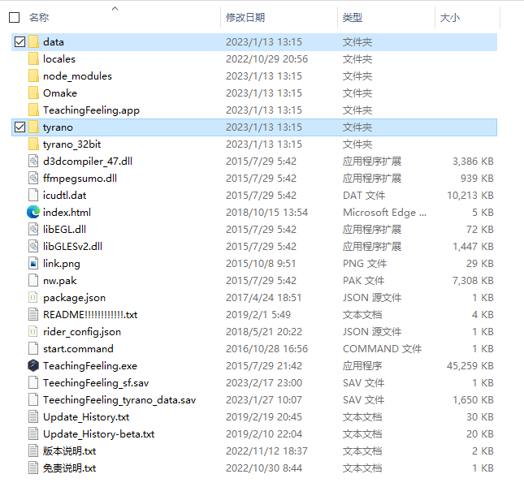
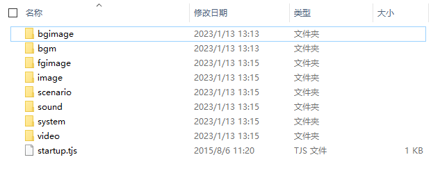
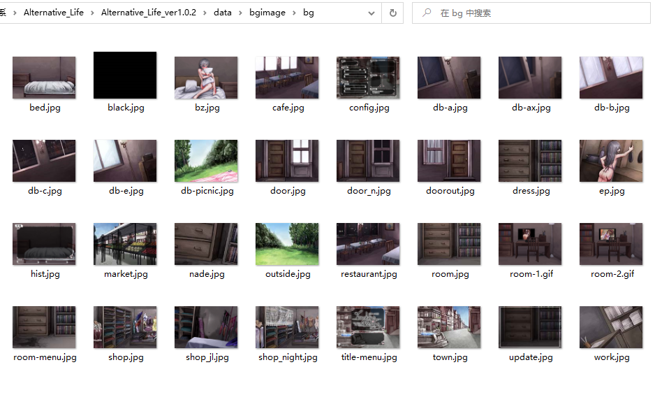
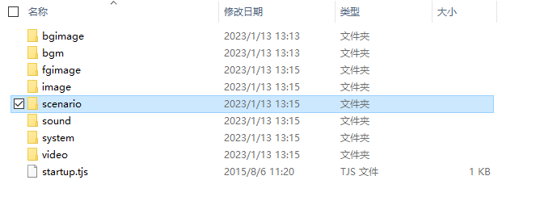
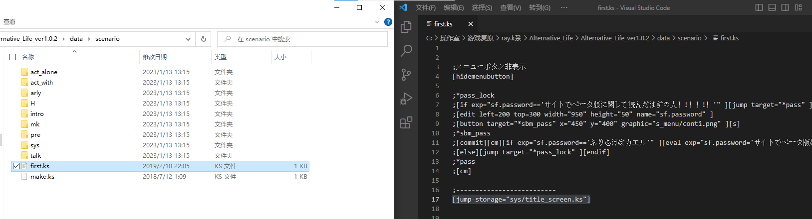
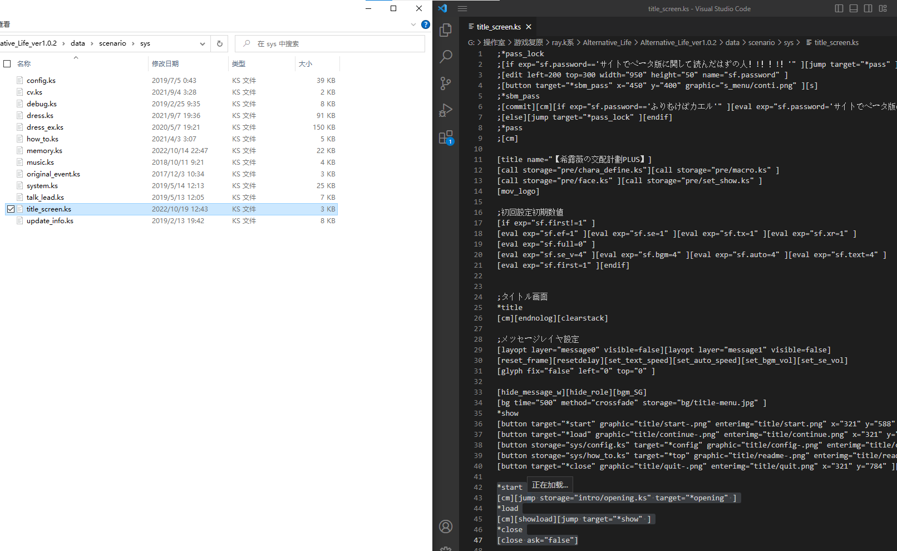

Teaching Feeling自改基础 ——第一讲
本帖是Teaching Feeling改版制作基础讲解的第一讲——文件的阅读 - - - - - - - - - - - - - -

- - - - - - - - - - - - - - Ca清（id：T_gas）编辑此贴发布并保持贴子更新 本贴是2023.2.1版 本贴在百度贴吧——teaching_feeling吧首发且保持最新 本贴为所有吧友提供信息支持 转载要求注明来源及编者，编者保留该帖一切权利
---- 前言 - - - - 本系列作者——Ca清（id：T_gas），笔者——Ca清（id：T_gas） 主要资料——《TF改版教程【入门级】》（或《TeachingFeeling改版入门教程》），作者——不是很擅长社交的坚果骑士
---- 第一讲——基础、TyranoScript的文件、文件的阅读逻辑 - - - -
---- 基础 - - - - Teaching Feeling -傷肌少女との生活-（旧名：奴隷との生活 ~Teaching Feeling~），中文名——希尔薇，是由日本游戏制作人Ray-K(Ray_Kbys)以TyranoScript引擎制作的ES类型(养成类)的galgame TyranoScript，是使用HTML5的游戏制作引擎，引擎是游戏制作的框架，HTML5是Web表示技术，使用HTML5的TyranoScript意味着由此引擎做出的游戏本质上其实是个网页，也就意味着它在windows、mac、android等传统环境以外还支持做出浏览器游戏，也就意味着用此引擎读游戏写游戏需要网页的“思维”。此引擎局限性大，但胜在可视化制作和简单，因此有一定的使用占比。
---- TyranoScript的文件 - - - - 使用TyranoScript制作的游戏其结构如下 如下图，在最外层是"data"和"tyrano"，"data"是几乎是整个游戏的内容，"tyrano"是引擎以及决定游戏主界面的“设置”“保存”“读取”等内容。  如下图，在"data"内，分"bgimage""bgm""fgimage""image""scenario""sound"主要文件和"others""system""video"次要文件。  其作用如下图 
---- Teaching Feeling的文件的阅读逻辑 - - - - 拿AL版举例，一打开应该是这样的，如下图  可以看出，除掉上图框选的部分，从文件名啊，占用大小啊，之类的就可以看出这都与游戏无关，也就是游戏框架，所以进入data，如下图  很明显，这些都是有意义的文件名，也就是说，这里才是游戏内容，比如第一个bgimage，明显是背景图片（background image，缩写bgimage），点进去看看，如下图  （bgimage下有很多文件，注意图中已有路径了）发现确实如此，即，其它文件安排也类似，文件名都有透露意义。现在就可以肯定data就是游戏内容了，图片部分都可以以上面的方法找到，编辑文本呢？如下图，回到data  读文件，就是读文件内容，就是读data的文件，按理来说，你应该一个个文件夹打开，观看，明白这个文件夹是干什么的才对，但我先告诉你，上图选中的scenario文件夹就是整个游戏的剧情及其调配显示逻辑，你可以从这里找到游戏剧情的文本，也可以发现剧情推进的逻辑，进入scenario，如下图  这时候文件该怎么按顺序看呢？自然是按你的游玩顺序看啦，按理来说，你打开游戏第一下就是看到标题吧，说了，文件名是有其意义的，所以就找找有没有文件名与“标题”有关的，接着就应该翻文件夹找了，但是现在呢明显有捷径啊，上图选中的文件叫做“first”，文件名是有意义的，我们找标题不就是为了找开始的地方吗，现在直接有first了不该看看吗，打开如右图，很明显，语句都是有意义的，很多看不懂？没关系，最下面一行挺显眼吧，一看，“jump”、“sys/title_screen.ks”这就是线索了，可以猜想，上面语句执行完就应该执行它了，“jump”？什么意思？跳？跳转！所以这条语句读完就要跳转到sys/title_screen.ks去了？！按路径找到这个文件打开，如下图  虽然不懂日语，但中间明显有个“画面”的汉字，往下看，“start”、“load”不是选项是什么？！看start下面那行里面也有jump，你就该知道该怎么读文件了吧，就是按图索骥，你怎么玩的就怎么找，jump就是线索，按每个jump的指向找到文件就是了 阅读好文件就知道游戏的运行逻辑了，想要编辑添加新剧情不是努力一下就信手拈来？！
---- 附加内容 - - - - 一、本资料作者——不是很擅长社交的坚果骑士保留对《TF改版教程【入门级】》（或《TeachingFeeling改版入门教程》）的所有权利，未经许可任何人均不得侵权，作者联系方式，qq：2123879486 二、本系列主要使用Alternative_Life版进行演示，文件编辑及阅读主要使用Visual Studio Code 三、本系列主要使用的Alternative_Life版基于原版ver2.5.0，原版ver3.x与4.x文件结构及运行逻辑不同，并且阅读难度提升，建议使用2.5.x的稳定版本
本贴是2023.2.1版
历史版（累计有阅读数：0、点赞数：0、回复数：0）：